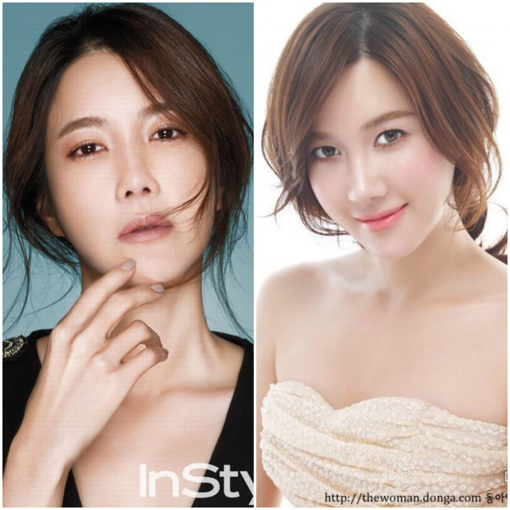
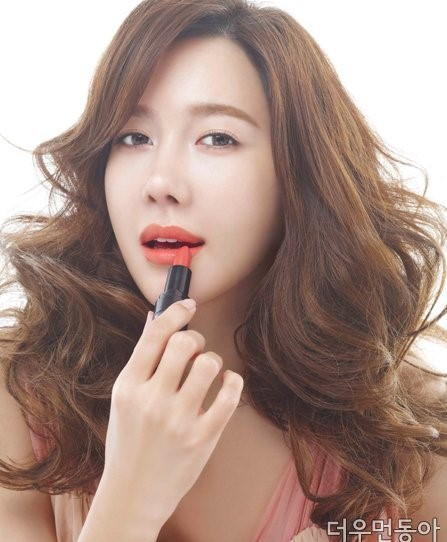

Bí quyết trang điểm với son môi hồng của mỹ nhân 'Cuộc chiến thượng lưu'
PNO - Ở tuổi 43, nữ diễn viên vẫn duy trì làn da căng bóng phù hợp với nhiều kiểu trang điểm khác nhau.
Bí quyết trang điểm với son môi hồng
Sở hữu làn da căng bóng, mịn màng nên Lee Ji Ah chỉ cần trang điểm nhẹ cũng đủ cuốn hút ánh nhìn của người đối diện. Tuy nhiên, khi nữ diễn phá cách trong những kiểu trang điểm quyến rũ, cô nàng khiến người hâm hâm mộ không khỏi giật mình vì quá xinh đẹp và sắc sảo.
Bình thường Lee Ji Ah chia sẻ cô chỉ thoa son môi màu sữa dâu và đánh má hồng để giúp vẻ ngoài thêm phần tươi tắn trong những buổi đi chơi, gặp gỡ bạn bè. Khi muốn thay đổi phong cách, phù hợp với những bộ trang phục thời thượng, cô thường sử dụng điểm nhấn là màu son đỏ đậm hay kẻ mắt khói.
Lee Ji Ah khoe nhan sắc tươi trẻ với son môi hồng.
Nói về bí quyết làm đẹp của mình, Lee Ji Ah thẳng thắn: “Lúc đầu, tôi không phải là chuyên gia. Tôi luôn lo lắng không biết mình trang điểm có ổn không và tôi bắt đầu tìm hiểu”.
Cô nàng cũng không ngần ngại hé lộ bí quyết trang điểm với son môi hồng tự nhiên của mình.
Người đẹp cho rằng để làm cho đôi môi hồng nổi bật thì tình trạng của làn da đóng vai trò rất quan trọng. Lớp nền trang điểm giàu độ ẩm, có tông sáng hơn màu da, sẽ giúp phái đẹp dưỡng ẩm và làm mịn kết cấu da.
Dùng cọ tán mỏng phấn highlight lên trán, mũi và vùng chữ C cạnh mắt để tạo vùng sáng nổi bật và mang lại cảm giác khuôn mặt nhỏ, ba chiều. Đây là một trong những bí quyết để có khuôn mặt rạng ngời cùng làn da căng mịn và mướt mắt của hầu hết nghệ sĩ xứ Hàn.
Bên cạnh đó, kem che khuyết điểm dạng lỏng cũng vô cùng hiệu quả trong việc che phủ tự nhiên các đường viền môi và nếp nhăn.
Nữ diễn viên quyến rũ với màu son hồng san hô.
Nữ diễn viên khuyên chị em nếu sở hữu làn da trắng hồng không tì vết thì có thể dùng màu son hồng nhạt nhưng để phù hợp hơn với làn da của người châu Á, màu hồng san hô đậm là lựa chọn tuyệt vời, giúp da tươi sáng hơn.
Nếu môi bạn bị khô hoặc bong tróc, hãy thoa son dưỡng dạng kem, và tẩy đi sau khoảng 15 phút để môi mềm và ẩm trước khi trang điểm.
Bận rộn với lịch trình quay phim kéo dài hàng tháng trời, nhưng Lee Ji Ah vẫn luôn giữ được sự tươi tắn và làn da căng tràn sức sống. Tiết lộ về bí quyết của mình, Lee Ji Ah chia sẻ cô luôn cố gắng bổ sung đủ lượng nước nhiều nhất có thể, bình thường nữ diễn viên sẽ uống 1 lít nước trong khoảng 5 giờ.
Nhờ vậy, người đẹp có thể giữ được nhan sắc tươi trẻ, thanh tao của mình dù đã bước sang độ tuổi 43. Nhiều khán giả còn nhận xét, gương mặt Lee Ji Ah không có nhiều thay đổi so với thời mới bước chân vào làng giải trí.
Cận cảnh làn da trắng hồng, căng mịn của Lee Ji Ah.
Sắc vóc nuột nà ở tuổi 43 nhờ chăm luyện tập thể thao
Lee Ji Ah tâm sự cô rất yêu thích ăn uống: "Tôi thích ăn bất kể món gì (Hàn Quốc, Trung Quốc, Nhật Bản...). Có những món ăn tại nhà hàng tôi cảm thấy thích sau đó còn tự mình học nấu ở nhà nhưng thường thất bại".
Không kiêng khem quá nhiều, để giữ gìn vóc dáng Lee Ji Ah chủ yếu chăm chỉ luyện tập thể dục. Nữ diễn viên cho biết từ nhỏ đã thích học bơi lội, một môn thể thao giữa dáng khá tốt, gần đây cô còn học bổ trợ thêm Pilates. Ngoài ra, cô còn thích những bộ môn mạo hiểm như trượt tuyết, lặn biển và cưỡi ngựa.
Sắc vóc gợi cảm của nữ diễn viên ở tuổi 43.
Lee Ji Ah thổ lộ từng có khoảng thời gian huấn luyện viên cho rằng phần hông của cô chưa được hoàn thiện nên đã xây dựng các bài tập cơ bụng và hông để giúp cô loại bỏ khuyết điểm, sở hữu thân hình hoàn hảo hiện tại.
Vóc dáng chuẩn cùng đôi chân dài nuột nà là lợi thế giúp Lee Ji Ah phù hợp với nhiều loại trang phục khác nhau từ sang trọng, nữ tính cho đến cá tính.
-- Chung Thu Hương --
Ý kiến
Hãy là người đầu tiên bình luận trong bài.